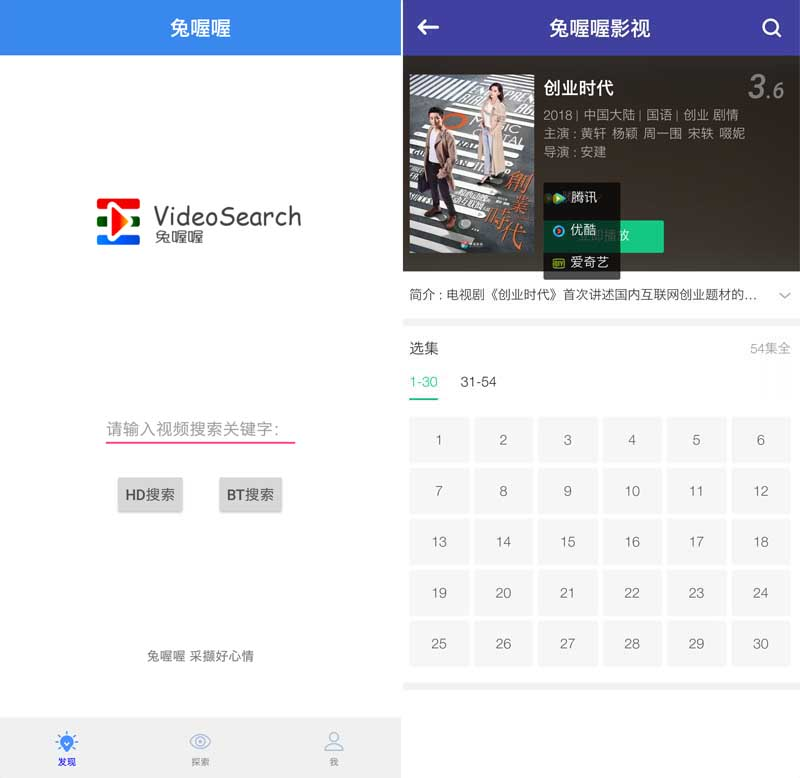
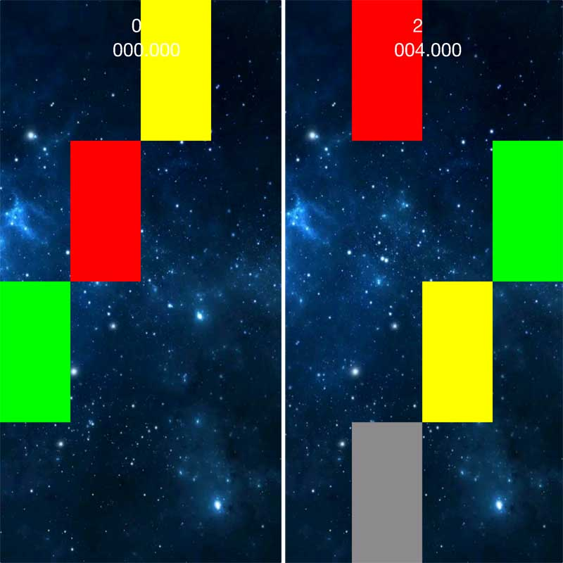
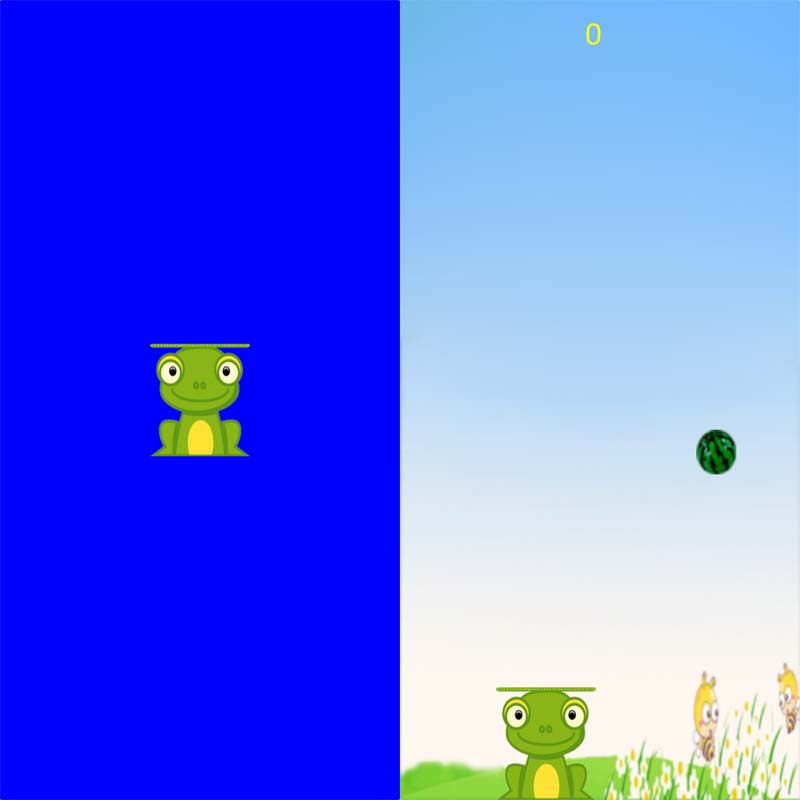
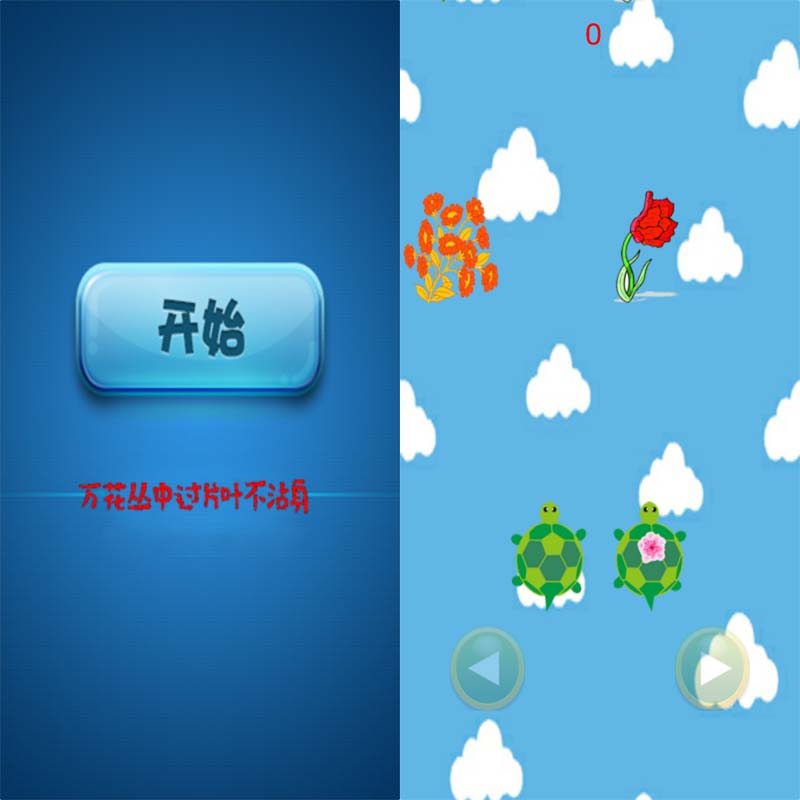

兔喔喔使用说明
兔喔喔声明：兔喔喔中所有视频与音乐资源来源于网络，非兔喔喔所有，仅供娱乐，支持正版，请勿下载传播盗版资源，否则后果自负。
兔喔喔使用腾讯云服务，需要手机安装微信或QQ才可正常使用。对于视频的缓存功能需要安装QQ浏览器方可使用。
视频
兔喔喔搜索网络视频资源，提供免费点播服务，体验零广告影视综艺。

在主界面搜索页，可实现“HD搜索”和“BT搜索”，HD搜索主要视频来源是国内各大视频网站，高清播放，但资源可能不够丰富，请根据需要选择搜索方式。BT搜索实现资源整合，能够网罗所有非过滤资源，但不能保证资源的清晰度。
如上图所示，视频还可以选择视频来源。
音乐
兔喔喔搜索网络音乐资源，提供免费点播服务。（部分代码来源于网络开源代码，在此注明）。
直播
涵盖央视、国内卫视、部分境外频道以及部分地方频道。
另有网络直播，直播来源：斗鱼。
芯片手册
提供丰富的电子元器件手册下载服务。
人人创作
文章来源于网络。
业界资讯
涵盖人工智能、移动互联网、科技新产品、名人访谈与活动以及移动应用产品的最新报道。
碎片精选
整合国内各大新闻网站的科技新闻，全网科技新闻一览无余。
百步钢琴
挑战速度极限的小游戏，在规则内点击100个方块，使用时间越少，成绩越好。

游戏规则：每次点击最下方的彩色方块（不是最底方的灰色块哦），点击后所有方块往下移动，到最底方变为灰色，若点击错误会失败，点击最上方和次上方方块无效。
欢乐演唱会
用于手机的字幕播放。
小菲
来和小菲聊天吧。
当屏幕出现话筒工具时，按住话筒图标进行说话，说完后放开，等待小菲的回应（此过程需要联网）。
小菲可以查天气，讲笑话，说故事，无所不能哦，你还可以对小菲说：“搜索视频 笑傲江湖”。会有意想不到的惊喜。
皮皮蛙
无论大人还是小孩子都可以嗨上天的小游戏，小孩益智，老人防痴，就连强壮的青少年都会在闲暇时光皮皮一会儿。左右翻转手机，青蛙会左右移动，记得接住从天而降的西瓜哦。

忍者萌龟
屏幕下方有两个按钮，左侧按钮控制左侧乌龟，右侧反之。按住按钮，乌龟会向屏幕外部移动，松开按钮后，乌龟位置会复原为内部，控制乌龟不要踩花哦。此游戏难度系数较高，和亲朋好友来一决高下吧。

寄语
兔喔喔在不断更新中，兔喔喔在手，天下我有，独乐乐不如众乐乐，好玩好用就给好友分享一起嗨起来！